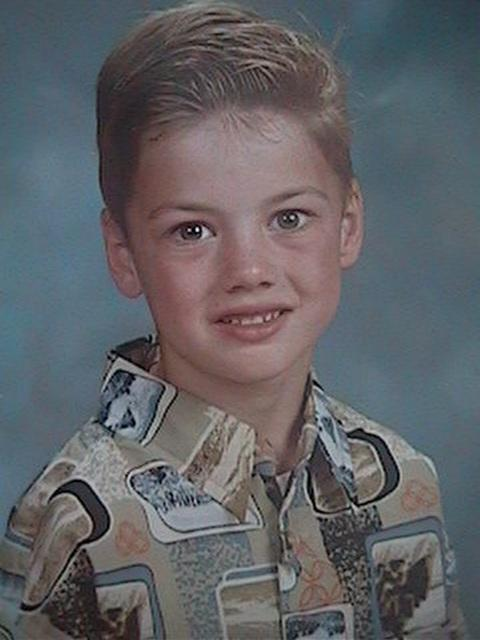
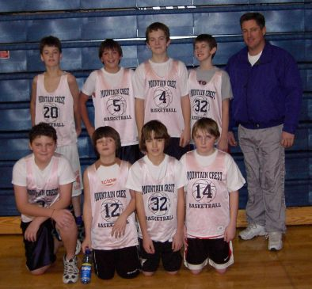
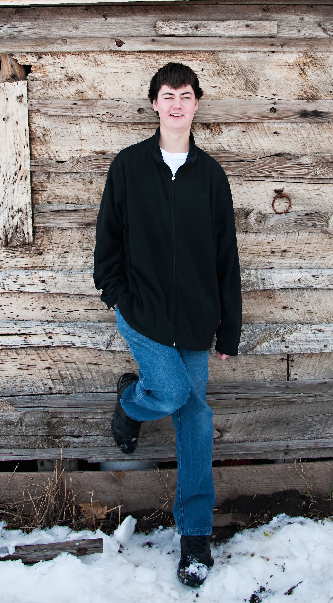
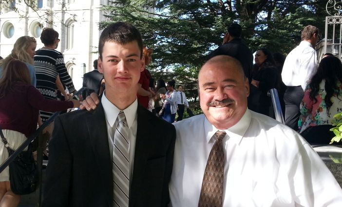
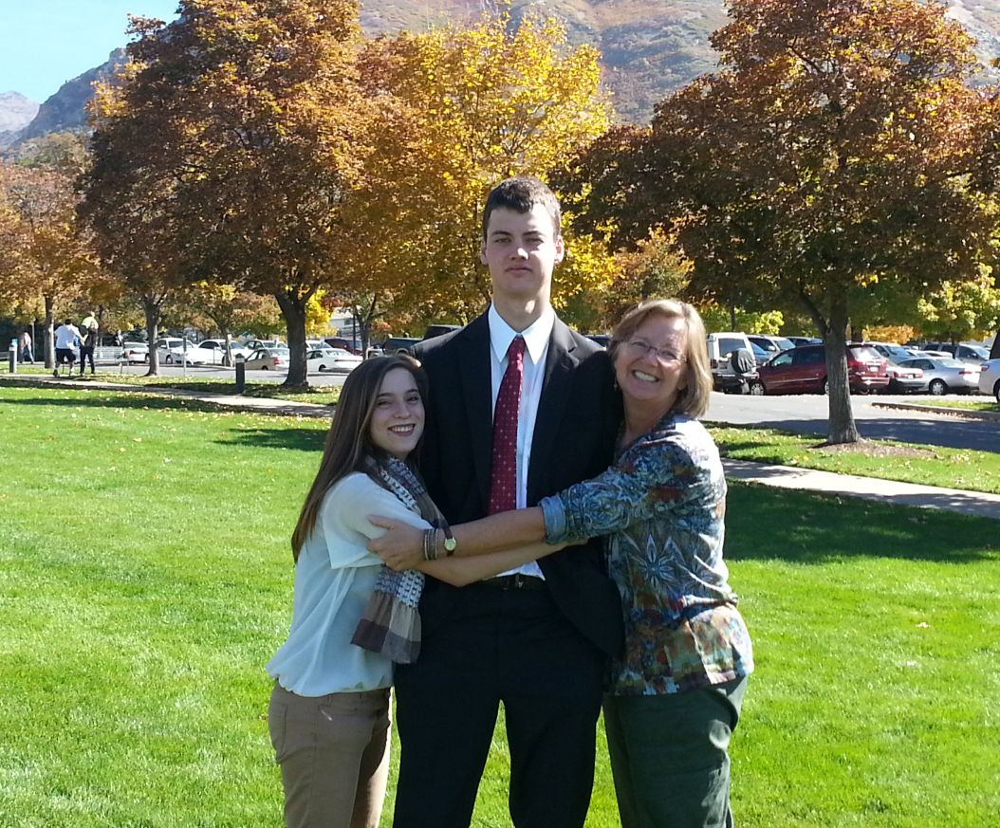

Zac
Zachary a is 6' 4" basketball enthusiast who is dealing with brain cancer. He was diagnosed in June of 2011 with a glioma astrocytoma after suffering severe balance problems while trying out for the school basketball team. The doctors  told us that it was terminal and that he'd live about a year. Traditional chemotherapy wouldn't work because of the location of the tumor and radiation would likely only buy him a year or less of life with the possibility of severe side effects, also because of the location of the tumor. We looked for alternative treatments and found the Burzinski Clinic in Houston, Texas. Their treatment is targeted at the genes whose dormancy enable cancer to thrive. The treatment stimulates those genes back into activity and has had good  success treating various cancers, especially nerve related cancers like Zac's.
He began therapy in early July of 2011 and saw a 25% reduction in the size of his tumor within 3 months. His tumor is a low  grade/slow growing tumor that doctors think has been with him for 6-7 years. They also think that it experienced a change and became more aggresive which caused the sudden onset of more sever symptoms. The aggresive part of the tumor is what was killed in the first 3 months. Because the rest of it is slow growing, the Burzinski folks think that it will also be slow going. He's been very upbeat about the whole affair and has handled it much better than his parents.
Latest Update (October 2014)
He endured 2 years of anti-neoplastin therapy with the Burzynski clinic and has been off therapy for over a year and a half. His tumor was reduced by 50% (including the first 25%) and is considered in remission. There has been no change in it size wise since about a year into the therapy. He is currently serving a mission to the Tempe, AZ mission.  He entered the MTC in Provo on the 22nd of October. 